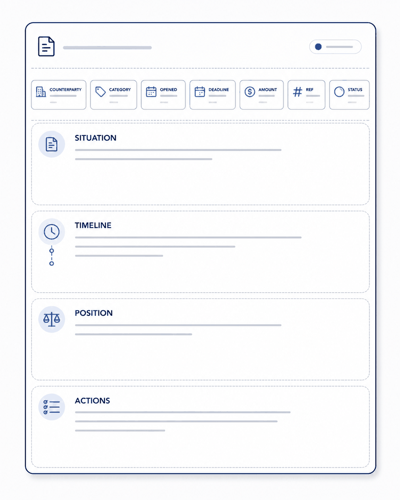
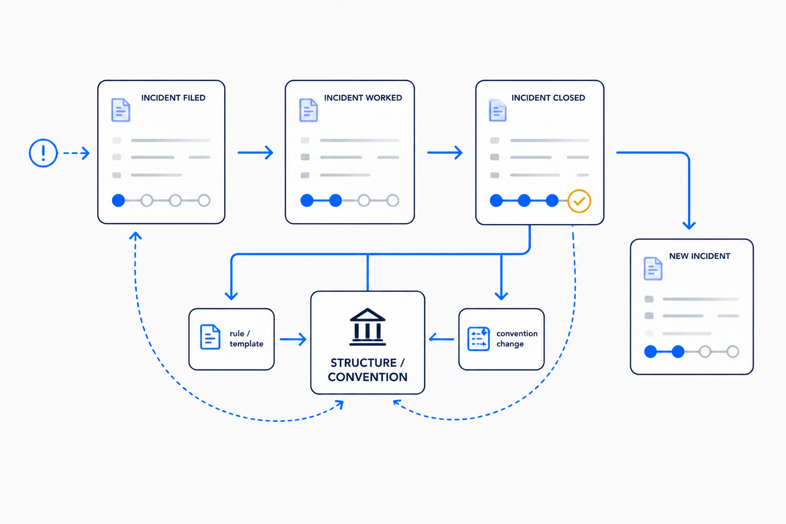

The problem with problems
Things go wrong at a steady, unglamorous rate. A printer arrives too big and the seller refuses the return. The boiling-water tap stops boiling. A newspaper subscription you cancelled quietly reactivates and bills you again. None of these is a crisis. Each is a small dispute with a counterparty, a bit of money, and a clock — and each one dies the same death: it gets handled in your head, then half-forgotten, then lost in a mail thread you can't find when the seller stalls for the third time.
That's the real failure mode. Not that things break — things always break — but that the handling of them is scattered across memory, inbox, and good intentions. You remember there was something about a refund. You can't remember the order number, the date you sent the letter, or what they promised. The counterparty is counting on exactly that.
So I did the obvious structural thing. When something goes wrong, it gets a file.
One incident, one capture
The rule is small and rigid: the moment a problem appears, it becomes a single note — an incident — filed on the day it started. Not an email flag, not a mental note, not a line in a to-do app. A real object, with a real shape.
Every incident carries the same fields at the top: who it's with, what category it is, when it opened, the next deadline, the amount at stake, the order or case number, and a status. Below that, four sections that never change — the situation in three sentences, a timeline built from the actual mails, my position and strategy, and the open actions. Same skeleton every time, so I never have to decide how to write it down. I just fill it in.
That sameness is the whole point. A dispute you can act on is one where you can, in five seconds, answer: what did they say, what did I say, what's the deadline, whose move is it. A dispute living in your inbox can't answer any of those without twenty minutes of scrolling.

A status, not a vibe
The field that does the most work is status, because it turns "I think that's still open?" into something you can see. An incident is open, then in-progress while I'm acting, then waiting once the ball is with them, escalated if it goes to the platform or a regulator, and finally resolved or lost. Six words, and every open problem in my life sits in exactly one of them.
Why it matters: the hardest part of any dispute is knowing whose move it is. "Waiting" means I've done my part and the clock is theirs — I can stop thinking about it until the deadline. "In-progress" means the ball is mine and I'm the bottleneck. Without that distinction you either nag too early or forget entirely. With it, a glance tells you where to spend attention.
And because every incident shares those fields, one page can watch all of them at once. A dashboard reads every incident file and lists them by status, sums the money in play per counterparty, and shows what's overdue — without my maintaining the dashboard at all. It holds no data of its own; it's just a live view over the files. The files are the truth; the overview is their shadow. (The same one-source, one-direction move as everything else I trust — a brain that projects a website, a week that drafts itself.)
Five that went wrong — and how the file helped
The point isn't the theory, it's that it works on ordinary bad days. A handful from a single stretch:
The refused refund. A laser printer, ordered online, turned out too big for the room. The seller refused the return: "drum and toner opened, no longer sellable as new." That's a common bluff, and an incident file is what lets you call it calmly. Timeline from the mails, a position grounded in the actual consumer-law right (you may try a thing out as you would in a shop; the seller may not refuse on those grounds), a clear escalation lever named. One letter, sent with the facts lined up. About an hour later: full refund agreed. The letter is now saved as a template — the next refused return starts three steps ahead.
The broken tap. The boiling-water tap stopped delivering boiling water. No one's fault, no counterparty to fight — just a defect under warranty. Here the file's job was different: pin down the proof. When was it bought, through whom, is it still in warranty? All of that came out of old order mails — bought fifteen months ago, two-year warranty, so the repair should cost nothing. A small deliberate move went in the file too: re-ordering the official consumable I'd been substituting with a cheaper one, so nobody could blame the off-brand part when the warranty claim lands. Warranty hygiene, written down before it's needed.
The zombie subscription. A cancelled newspaper reactivated itself and sent a reminder for a trivially small sum. The instinct is to just pay it and move on — which is how these things quietly persist. The file forced the boring check instead: pull the cancellation confirmations, reconstruct the timeline. It turned out the "reactivation" was two legitimate closing invoices, not a wrongful restart — so the incident closed honestly, not with a grudge. And it left a channel lesson behind: their support address bounces, use the portal. That lesson is now in the runbook, so I never rediscover it.
The package that never came. Fifteen days, no delivery, a seller deflecting with "re-delivery requested." The file's contribution is the deadline: one last chance with a hard date, and a pre-written next step — the platform's guarantee claim — sitting ready for the day the date passes. No re-litigating, no wondering if I've been patient enough. The clock decides.
The near-misses. Two payments that felt completed but silently hadn't — an add-on, a scheduled ride. No harm done either time, but the pair produced the most useful rule of all: verify every online payment across four independent channels — the confirmation mail, the app, the bank line, a screenshot — because a comfortable feeling of "I paid that" is not evidence. That rule now saves problems before they become incidents.
The structure improves itself
Here's the part I care about most, because it's the difference between a filing habit and a system. The convention wasn't handed down finished. It was built by the incidents themselves.
It started on a single day when three disputes ran at once and I noticed I was logging each one differently — one as a task, one as a note, one buried in correspondence. That friction was the trigger: define a proper incident type, one shape, a dashboard. A few days later a defect — the tap — didn't fit the original definition, which only covered disputes where a counterparty was at fault. So the definition widened: an incident is anything that goes wrong and needs following up, internal or external, someone's fault or no one's, with a new field to tell the kinds apart. The structure grew a joint exactly where a real case bent it.
That's continuous improvement in the literal sense. Each incident is both a problem to solve and a test of the structure. When a case slides cleanly into the existing shape, the shape is validated. When it doesn't fit, the misfit is the signal — widen the definition, add a field, write a new channel lesson into the runbook. The system that handles your problems gets better every time you have one. Boring is what still works next year, and it works better each year because the exceptions keep teaching it.

What structure can and can't do
Let me be honest about the limits, because a system oversold is a system distrusted. None of this stops things going wrong. The tap still broke. The seller still tried it on. The vault is not a shield; it's a memory and a discipline. It can't make a counterparty behave, and it can't turn a weak case into a strong one — where I had no real claim, the file just told me so plainly and I let it go.
What it does is narrow: it refuses to lose the thread. Every open problem has one home, one status, one deadline, and one place the next move is written down. Nothing depends on my remembering. And because the files share a shape, an assistant — human or AI — can read the whole board, draft the next letter from the timeline, and flag what's overdue, precisely because there's a structure to read. Point the same helper at a shoebox of mails and it has nothing to stand on. The intelligence is only as good as the structure beneath it.
That's the quiet thesis under all of it — the same one behind a week that plans itself. When something goes wrong, the magic isn't a clever tool that fixes it. It's a plain file, a fixed shape, and the habit of letting each mess teach the system that holds the next one.
Give it a file. The structure does the remembering; you just have to decide.